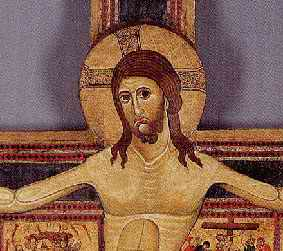

3. NABI ISA (6 SM - 30 M)

Pengaruh Nabi Isa terhadap sejarah kemanusiaan begitu
jelas dan begitu besar. Rasanya tak banyak orang yang
mempersoalkan apa sebab Nabi Isa berada di tempat hampir
teratas dalam daftar buku ini. Malahan, mungkin banyak orang
bertanya-tanya kenapa Isa tidak berada di tempat
teratas.
Akan halnya kekristenan, tak adalah kiranya masalahnya.
Dalam perjalanan sang waktu tak syak lagi agama ini sudah
peroleh pemeluk lebih besar dari agama lain yang mana pun
juga. Perlu ditegaskan bukanlah perihal pengaruh dari
pelbagai agama yang menjadi titik perhitungan di buku ini,
melainkan ihwal yang menyangkut pengaruh perorangan.
Tidaklah seperti Agama Islam, Agama Nasrani didirikan bukan
oleh seorang melainkan dua -- Isa dan St.
Paul -- karena itu pengakuan jasa-jasa atas perkembangan
agama itu harus dibagi sama antara kedua tokoh itu.
Nabi Isa meletakkan dasar-dasar pokok gagasan etika
kekristenan termasuk pandangan spiritual serta ide pokok
mengenai tingkah laku.manusia. Sedangkan teologi Kristen
dikelola dasar-dasarnya oleh St. Paul. Isa mempersembahkan
pesan-pesan spiritual sedangkan St. Paul menambahkannya ke
dalam bentuk pemujaan terhadap Isa. Lebih dari itu, St. Paul
merupakan penulis bagian-bagian penting Perjanjian Baru dan
merupakan penganjur pertama orang-orang agar memeluk Agama
Nasrani pada abad pertama lahirnya agama itu.
Isa terhitung berusia muda tatkala "wafat" (lain halnya
dengan Buddha atau Muhammad),
dan yang ditinggalkannya hanya sejumlah terbatas pengikut.
Tatkala Isa mangkat, pengikutnya cuma terdiri dari sejumlah
kecil sekte Yahudi. Baru lewat tulisan-tulisan St. Paul dan
kegigihan khotbahnya yang tak kenal lelah, sekte kecil itu
dirubah menjadi kekuatan dinamis dan merupakan gerakan yang
lebih besar, baik terdiri dari orang Yahudi maupun bukan.
Dari situlah-akhirnya- tumbuh menjadi salah satu agama besar
dunia.
Akibat hal-hal itu sementara orang beranggapan St.
Paul-lah dan bukan Isa yang lebih layak dipandang
sebagai pendiri Agama Nasrani, karena itu tempatnya dalam
daftar urutan buku ini mesti lebih tinggi ketimbang Isa!
Biarpun sulit dibayangkan apa wujud kekristenan tanpa St.
Paul, tapi sebaliknya juga amatlah jelas: tanpa Nabi Isa,
Agama Nasrani tak akan pernah ada samasekali.
Sebaliknya, tampak tak beralasan menganggap Isa
bertanggung jawab terhadap semua keadaan seperti penilaian
gereja-gereja Kristen serta pribadi-pribadi pemeluk Agama
Nasrani kemudian, khusus sejak Isa sendiri tidak setuju
dengan sikap-sikap seperti itu. Di antara mereka -misalnya
perang agama antar mazhab-mazhab Nasrani, penyembelihan
kejam dan pemburuan terhadap orang Yahudi- merupakan
kontradiksi dengan sikap dan ajaran Isa. Rasanya tak
beralasan menganggap bahwa perbuatan itu disetujui oleh
Isa.
Di samping itu walau ilmu pengetahuan modern pertama kali
tumbuh di negeri-negeri pemeluk Nasrani di Eropa Barat tapi
rasanya tidak kena kalau hal itu dianggap sebagai tanggung
jawab Isa. Dengan sendirinya tak seorang pun di antara para
pemuka pemeluk Kristen menafsirkan ajaran Isa sebagai suatu
seruan untuk melakukan penyelidikan ilmiah terhadap dunia
dalam arti fisik. Yang terjadi justru sebaliknya:
berbondong-bondongnya masyarakat Romawi memeluk Agama
Nasrani mengakibatkan merosotnya baik dasar umum teknologi
maupun tingkat umum minat terhadap ilmu pengetahuan.
Bahwa ilmu pengetahuan kebetulan tumbuh di Eropa
sebenarnya suatu petunjuk adanya kultur yang diwariskan
turun-temurun yang selaras dengan jalan pikiran ilmiah. Ini
samasekali tak ada sangkut-pautnya dengan ajaran-ajaran Isa
tapi berkat pengaruh rasionalisme Yunani yang jelas
tercermin dalam karya-karya Aristoteles dan Euclid. Adalah
perlu dicatat timbulnya ilmu pengetahuan modern bukanlah di
masa jaya-jayanya kekuasaan gerejani dan kesucian Kristen
melainkan pada saat mulai menyingsingnya renaissance, saat
tatkala Eropa sedang mencoba memperbaharui warisan sebelum
Isa.
Kisah kehidupan Isa jika dikaitkan dengan Perjanjian Baru
tentulah sudah tidak asing lagi bagi para pembaca, karena
itu bisa membosankan jika dikunyah-kunyah lagi. Tapi, ada
juga segi-segi yang masih layak dicatat. Pertama, sebagian
terbesar informasi yang kita peroleh tentang kehidupan Isa
tidak karu-karuan, simpang-siur tak menentu. Bahkan kita
tidak tahu siapa nama aslinya. Besar kemungkinan nama
aslinya Yehoshua, sebuah nama umum orang Yahudi (orang
Inggris menyebutnya Yoshua). Dan tahun kelahirannya pun
tidaklah pasti, walaupun tahun 6 sebelum Masehi dapat
dijadikan pegangan.
Bahkan tahun wafatnya pun yang mestinya diketahui dengan
jelas oleh para pengikutnya, juga belum bisa dipastikan
hingga hari ini. Isa sendiri tidak meninggalkan karya
tulisan samasekali, sehingga sebetulnya segala sesuatu
mengenai peri kehidupannya berpegang pada penjelasan
Perjanjian Baru.
Malangnya, ajaran-ajaran Isa bertentangan satu sama lain
dalam banyak pokok masalah. Matthew dan Lukas menyuguhkan
versi yang samasekali berbeda mengenai kata-kata akhir yang
diucapkan Isa. Kedua versi ini sepintas lalu tampak berasal
dari kutipan-kutipan langsung dari Perjanjian Lama.
Sesungguhnya bukanlah barang kebetulan Isa mampu mcngutip
dari Perjanjian Lama. Sebab, meskipun Isa pemuka Agama
Nasrani, dia sendiri sebetulnya seorang Yahudi yang taat.
Sudah sering sekali ditunjukkan bahwa Isa dalam banyak hal
teramat mirip dengan nabi-nabi kaum dari Perjanjian Lama dan
dia terpengaruh secara mendalam dengan mereka. Seperti
halnya nabi-nabi, Isa memiliki pesona personalitas luar
biasa yang meninggalkan kesan mendalam dan tak terhapuskan
begitu bertemu dengannya. Isa seorang yang mempunyai daya
kharisma dalam arti yang sesungguh-sungguhnya .
Berbeda sangat dengan Muhammad yang menggenggam kekuasaan
agama dan politik di satu tangan, Isa tidak yunya pengaruh
politis di masa hidupnya ataupun di abad berikutnya. (Kedua
manusia itu memang punya pengaruh tidak langsung dalam
jangka panjang perkembangan politik). Isa menyebar pengaruh
sepenuhnya dalam ruang lingkup etika dan merupakan seorang
pemimpin spiritual.
Apabila peninggalan Isa semata-rnata dalam kwalitas
selaku pemuka spirituaI, tentu saja tepat jika orang
mempertanyakan sampai sejauh mana gagasan spiritualnya
mempengaruhi dunia. Salah satu sentral ajaran Isa tentu saja
Golden Rule-nya. Kini, Golden Rule-nya itu sudah diterima
oleh banyak orang, apakah dia itu Nasrani atau bukan sebagai
patokan tingkah laku moral. Kita bisa saja berbuat tidak
selalu atas dasar patokan itu, tetapi sedikitnya kita
mencoba menyelusuri relnya. Jika Isa benar merupakan perumus
pertama dari patokan dan petunjuk yang sudah diterima
sebagai hampir prinsip yang universal, bisa dipastikan dia
layak didudukkan pada urutan pertama daftar ini.
Tapi, fakta menunjukkan yang namanya, Golden Rule itu
sebenarnya sudah menjadi patokan yang jadi pegangan
Yudaisme, jauh sebetum Isa lahir. Pendeta Hillel, pemuka
Yahudi yang hidup satu abad sebelum Masehi secara
terang-terangan mengatakan bahwa Golden Rule itu adalah
patokan utama Yudaisme.
Hal ini bukan saja diketahui oleh dunia Barat melainkan
juga Timur. Filosof Cina Kong
Hu-Cu telah mengusulkan konsepsi ini pada tahun 500
sebelum Masehi. Juga kata-kata seperti itu terdapat di dalam
Mahabharata, kumpulan puisi Hindu purba. Jadi, kenyataan
menunjukkan bahwa filosofi yang terkandung di dalam The
Golden Rule diterima oleh hampir tiap kelompok agama
besar.
Apakah ini berarti Isa tak punya gagasan etik yang
orisinil? Bukan begitu! Pandangan yang bermutu tinggi dan
terang benderang di persembahkan dalam Matthew 5:43-44:
Kamu dengar apa yang dikatakan bahwa kamu harus mencintai
tetanggamu dan membenci musuhmu. Tapi kukatakan padamu,
kasihanilah mereka yang telah mengutukmu, berbuat baiklah
kepada mereka yang membencimu, berdoalah buat mereka yang
menaruh dendam kepadamu dan menganiayamu.
Dan kalimat sebelumnya berbunyi " ... janganlah melawan
kejahatan. Jika mereka tampar pipi kananmu, berikan pipi
kirimu juga."
Kini, pendapat ini bukan merupakan bagian dari Yudaisme
di masa Isa dan bukan pula jadi bagian pegangan Agama-agama
lain. Sudah dapat dipastikan merupakan yang pernah
terdengar. Apabila ide ini dianut secara meluas, saya tidak
ragu maupun bimbang sedikit pun menempatkan Yesus dalam
urutan pertama dalam daftar.
Tapi, kenyataan menunjukkan anutan ide itu tidaklah
meluas benar. Malahan, umumnya takkan bisa diterima.
Sebagian besar pemeluk Nasrani rnenganggap perintah
"Cintailah musuhmu" hanyalah bisa direalisir dalam dunia
sempurna, tapi tidak bisa jalan selaku penuntun tingkah laku
di dunia tempat kita semua hidup sekarang ini. Umumnya
ajaran itu tidak dilaksanakan, dan pula tidak mengharapkan
orang lain melakukannya. Kepada anak-anak pun kita tidak
memberi ajaran begitu. Ajaran Isa yang paling nyata adalah
tetap merupakan semacam ajaran yang bersifat kelompok dan
secara mendasar tak liwat anjuran yang teruji lebih
dulu.
|